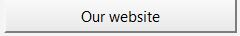

1) Discover the Gaia Dataset.
2) Select Columns in "Data Values", you want to plot by holding 'Shift + Click' or 'Ctrl + Click'.
3) Choose a "Сircle opacity" for the data points
and then click the "Plot"-Button.
4) Move your Cursor over the plot objects to get more information.
5) Have Fun exploring and see our website for additional information about the project!

Correlation matrix
- Tooltip for histograms
- Tooltip for correlation values
- The brushing to highlight the same points in different
scatterplots (select some area with points in scatter plot)
- The ratio of the selected values and their corresponding graphs / values.
- Axes
All x-axes fit into histograms and scatterplots, but are independent from cells with correlation values.
All y-axes fit only into scatterplots.
The y-axis values of the histograms are presented by a tooltip.
For example:
x1 fit into 3/5, x2 into 4/2, x3 into 1
y1 fit into 3/2, y2 into 5